In the beginning was the word
𝕷𝕺
Quite literally, in fact. LO was the first message sent over ARPANET, DARPA’s precursor to the Internet, on October 29, 1969. The intended message was LOGIN, to log into the remote system, but the network crashed after transmitting just those first two letters. :)
Those two ASCII characters, though, were able to convey 40% of a message requesting the server to start the login process. This concision, this economy of transmission, would be the entire lifeblood of the Internet for years to come. Not only did messages between connected machines have to be utterly sparse due to network capabilities that would be inconceivably slow to today’s youngsters, the local facilities for handling these data were equally frugal. Anyone with a modicum of programming expertise or even mere exposure has likely seen some language’s version of a command to output text, which usually involves the word print: it prints to the standard output, nowadays almost always set to a terminal emulator displayed on screen. Several decades ago, the terminal wasn’t emulated, and the printing often happened on an actual printer. Load it up with a blank medium like form-feed paper (one continuous sheet of paper accordioned into a ream, each edge girded by a series of holes for the printer’s mechanism to grab onto), ask it to print the result of your work, and you’d eventually get a hard copy. It wouldn’t look much better than Pin Art if you were using a dot-matrix printer, so named because of the visible grid pattern of dots they’d produce, but function was everything in those days with form not even in the running. The early Internet was a serious new tool for research institutions and not a consumer item, so all it had to do was work, and that was difficult enough.
Compare and contrast
After a few decades, one thing has stayed the same: technical issues. The Internet started with a failed login command, and modern life still involves almost daily struggles with dropped packets, server issues, bad hops, weak WiFi signals, and more. As always, we do our best with what we’ve got and hope it’s enough, whether it’s a teleconference, a game, or anything in between. Pushing boundaries and striving for more is an inextricable part of the human condition; it helps define what it means to be a person. We think outside the box so that we can always reach for a new, shinier box.
Unfortunately, one thing has completely turned around, and that is that some people are simply destroying all the boxes until everything breaks. ARPANET’s LOGIN connected two universities – UCLA and Stanford – for a huge leap forward in collaboration, but the command itself is absolutely spartan in an attempt to work within the constraints of the system’s capabilities. Too many developers today have lost sight of this, overloading their projects with so much garbage that the whole thing is unusable or fails entirely. They could pull back a little bit and produce something good, but that’s not the goal. The goal is more animations, more ads, more exit intent popups, more autoplaying videos, more sponsored content, more things that
NO.
ONE.
WANTS.
Well that escalated slowly
For a long time between then and now, we did want the new things. As we gradually thought outside of and outgrew a dizzying series of boxes, the Internet went from hard copies of text, to digitally-displayed text, to text with proper formatting and styling, then images, sounds, animations, interactivity... the Internet’s growth has been incredibly fruitful. I know that’s blindingly obvious to the point of cliché, but this is my website and I’m allowed to say obvious things on it if I so choose. Anyway, just as real-time text communication ushered in a new paradigm of teamwork and possibility, each new leap has been similarly transformative. We can not only share our reaction to a painting, we can share a photo of the painting itself. This was initially a big deal, and also a very slow deal, because image files are generally much bigger than text files: a single image captured by your phone’s camera might easily occupy more storage space than hundreds or even thousand of pages of text. But that can be worth the wait, so wait we would, for minutes at a time, on connections that charged by the minute like a long-distance phone call. You could see a colleague’s newest painting, or a photo of your favorite band in concert, or eventually an animated GIF (pronounced with a “g” as in “gentle,” not as in “gone”) of a clock’s gears.
Or a dancing baby.

This was everywhere in the 90s. Everything was everywhere in the 90s; the Internet was a new toy for most people and the first thing you do with a new toy is push all the buttons. This was one of the things this toy can do, so we did it. Amateur web designers, which included everyone from entrepreneurs trying to put their company online to kids with Geocities accounts, figured “why not?” and there was no one within earshot to answer. Geocities went offline in 2009, but there’s a tool called The Geocities-izer that reads in any web page of your choice and produces a version with horrible design decisions like you’d see on a classic Geocities site, such as festooning it with the dancing baby pictured above.
But these were aesthetic design decisions, and while they may have been terrible design decisions, they weren’t malicious and they didn’t actually break anything. The worst common problem you’d see would be low-contrast text, and you can get around that by simply highlighting it to force white text on a blue background. Even the most atrocious sites could still load in a reasonable amount of time, convey their message (if any), and generally work for the most part, because the web is resilient enough to handle the irrelevant images and unclosed HTML tags that were pretty much the extent of an early amateur’s escapades.
Handguns and tequila
A computer lets you make more mistakes faster than any invention in human history, with the possible exceptions of handguns and tequila.— Mitch Ratcliffe, Technology Review, April 1992
Oddly, neither one of these pop-up ads urging me to subscribe actually convinced me to subscribe.

And neither one of these buttons to skip the currently-playing video ad actually convinced me to hurry to the next queued video ad.
{kind=link}
Those were real web pages that I really saw in July and August of 2020. Long gone are the halcyon days of well-meaning folks spawning a page with a bright red background – and I mean real red, solid #FF0000, not some puny pastel gradient – with orange Comic Sans text and a dancing baby border. Now we’ve got a stuffed accounting suit telling a stuffed marketing suit to get a stuffed management suit to gently erode a developer’s soul with the task of implementing a second pop-up ad for a subscription. But, boss, we already have one. “Make another one! These pop-ups have high subscriber conversion; we have the numbers.” So like, since it’s already there, and it’s a waste of time to reinvent the wheel, can I just make this one pop up twice? “NO YOU MAY NOT THAT IS LAZY AND PEOPLE WILL SCOFF AT US! Make it totally different. But also kind of the same, for consistency.”
Maybe this is what we get when we combine computers with tequila.
I don’t know what else to say about these. Just gaze at them in fear and wonder. Weep briefly, perhaps.
A new hope
“New”?
A decades-old hope
The Lynx Browser is a text-mode web browser, which is exactly what it sounds like. The beta was released July 22nd, 1992, ironically just four days after the World Wide Web hosted its first photo. Of course, the existence of a single image didn’t immediately make text obsolete and doom a text-based browser to oblivion before it even manifested: other than that single photo, the web was 100% text, so such a tool was still perfectly relevant. In fact, a large portion of web content today is text, from articles like this one to discussion forums to recipes for chocolate babka (have you ever had babka? It lies somewhere between – and significantly above – bread and cake). Predictably, it’s vanishing in terms of bandwidth share as other media formats gain prevalence, especially video, but in terms of users spending time consuming and relaying information, it remains a cornerstone of the Internet due to its speed and efficiency for man as well as machine.
- Uses little storage space
- Low bandwidth requirements
- Quick to process
- Trivially machine-searchable
- Easily rearranged and edited without artifacts
- Consumed at the user’s own pace unlike e.g. a video
- Easy to visually scan for relevant information
If a media item can convey all of its content as text, then keeping it as such is the only sane choice. Of course, that doesn’t stop people from turning scripts or interviews into videos rendered in the highest possible quality, because podcast.txt at 8KB just doesn’t have the same zazz as podcast.opus at 6MB or podcast.mp4 at 310MB, even if it’s two people sitting behind microphones and talking at each other. Those are not random numbers. They are the actual sizes of the text transcript, audio stream, and 4K video file of this video, a six-minute discussion between two presenters about a change to YouTube’s video quality selection options on its mobile app. Instead of simply selecting a resolution, this level of granularity is now buried one level deeper in this menu, which now offers a few simpler choices at first, reproduced below from the linked support page:
- Auto (recommended): Changes to give you the best experience for your conditions.
- Higher picture quality: Uses more data so videos may take longer to start or may buffer more often.
- Data saver: Lower picture quality, but videos may start faster.
- Advanced: Set a specific quality resolution.
Note that you can still manually select a resolution. You just have to first specify that you’d like to do that rather than relying on the more streamlined new options, at the cost of a single extra tap.
This video is available in 4K. It’s not a summer blockbuster movie with amazing special effects that should be viewed in as much detail as possible. If YouTube automatically selects something below 4K, the only practical result is that the video will load faster and use less bandwidth. In fact, any resolution is fine. Or, from another perspective, no resolution is fine, because it’s video of a podcast. It is effectively behind-the-scenes footage of an audio-only format. The visuals cannot be allowed to matter.
And what is a podcast? Effectively, a talk radio broadcast. But radio was invented in the early 20th century, far before the advent of the Internet’s easy transmission of digital text. The modern equivalent of such a product would thus be... a written article. Indeed, commercial radio stations will often transcribe the interviews they conduct and publish the text on their website.
A 4K video, which could have been a text file, complaining that mobile users need one extra tap to view the highest possible resolution of videos that could have been text files. On their phone with a six-inch screen.
Back to the raft
There are perhaps more popularly recognizable phrases denoting a return to a previous state, like “the way we were” or “home sweet home,” but this one will always resonate with me. Spelling Jungle, an educational computer game released in 1993, featured a series of simple spelling exercises, executed primarily in two ways. In one, you’d control your character in a simple overhead view to gather each letter of that stage’s hinted word in the correct order, avoiding hazards like darts and solving basic puzzles like finding a way to cross a river. In the other, your character would appear in a side view at one end of the screen, rowing down a river to the other side, propelled by the player typing each word displayed on the screen.
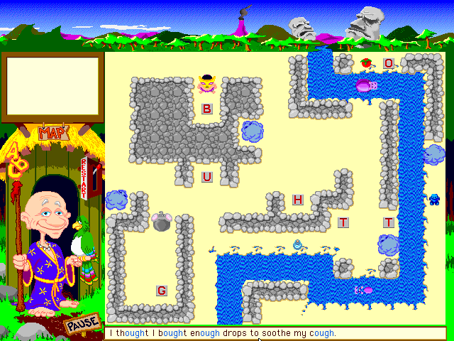{kind=link}
Puzzle stages begin by arriving at the level on a raft. After completing the challenge, you must return to that point. This directive is announced by the game’s NPC who guides you through your journey, a bald, elderly fellow wearing a magical bathrobe and wielding a spelling staff. We know it’s a spelling staff because the ornament at the top consists of the letters “ABC.” This amicable chap, whose name is Yobi, raps the ground with his staff twice, and instructs you thusly:
Back to the raft.— Yobi, Spelling Jungle
You dutifully swagger back to your aquatic conveyance, and the level is complete.
In this metaphor, the raft is text content, the level is the myriad twists and turns of what the Internet has become over the years, Yobi is our inner selves beatifically reminding us of the simple elegance of returning whence we came at fruitful journey’s end, the spelling staff is the enduring power of text, the parrot is a dancing baby except here it’s okay because A) this is a game and B) it’s thematically appropriate, the pause button is our ability to stop and reconsider our path, and the restart lever is major browsers sending us back in time with stripped-down websites so we can try the Internet again and do it right this time.
Back to the track
We filled the Internet with marvels and wonders, but, like a fling with Djoghurt that has perhaps gone a bit too far, it’s time to get back to the track. Every major browser besides Chrome (we’ll get to that later) now has a feature that scours a web page clean of all the grime and filth that hobbled it, usually called something like reader mode or reader view to hearken back to when the Internet was for reading.
Because it still is.
Reader mode extracts a page’s rendered text, attempting to identify the actual content while filtering out unrelated text like ad captions or sidebars. Basic elements like images and tables are also included: reader mode isn’t attempting to emulate text-mode browsers, and these different elements and media aren’t remotely problematic when they’re part of a page’s intended and desired content. After gathering all relevant data, reader mode will assemble them into a page following a standard template, usually very minimalist in appearance. Most implementations have a few unobtrusive extra features like the ability to adjust the size or font of text, read the page aloud with an artificial voice, and so on. Notably absent is anything that detracts from the page’s content, from custom styling to ads and everything in between. Observe the difference when reader mode is applied to this article from Wired.
{kind=link}
Let’s start at the top. First we have a nav bar, which I’d say is perfectly fine. A large commercial site like Wired has a lot of content and features, and an unobtrusive widget like this allows users to navigate the site without eating up much real estate. Next, we have an ad. Ads aren’t inherently negative, but they’re obviously not inherently positive, either, and this one has some negative aspects: located at the top of the page, users must scroll past it to get to the content, as opposed to sidebar ads that usually occupy otherwise-fallow space due to most reading content not spanning the entire width of a widescreen monitor. It’s also a moderately large ad. Following that, there’s a gigantic image. I’m not sure where this falls on the dancing baby scale, so let’s take a quick look at it.

This appears to be a photograph of a poker game. The page contains no caption for it other than credits for photographers Keirnan Monaghan and Theo Vamvounakis, so I can’t be sure whether it’s a photograph of the poker game described in the article’s opening paragraph. It appears to be not just a photo but a screen capture of a camera’s viewfinder image. The date at the bottom right is 9/21/19, which matches the aforementioned game. However, I suspect that this image started as just a generic “it is the game of poker” photo, and the HUD elements were added afterward to give the photo the apperance of a security camera at the relevant venue during the event in question. The chromatic abberation is artistic, to be sure, but inauthentic. As far as I can determine, I’d say this photo doesn’t actually impart any information and thus adds nothing of substance to the article.
And yet, it’s huge! If not for the other elements vying for the reader’s attention, it would take up the entire screen.
Let’s move on to the next element: the ad to subscribe. Ha ha, no, you missed the CCPA notice at the right. The CCPA is a California law that, in a very small nutshell, requires companies to disclose to their websites’ visitors what kind of information they gather about said visitors, and allow those visitors to select what they’d like to permit and what they’d like to block. This is pretty much unavoidable for any site involved in modern advertising with its associated trappings of cookies, trackers, analytics, and so on. The only way to avoid dealing with that in this day and age is to run a site like mine with none of that stuff, which is why you didn’t get a CCPA notice when you landed here even if accessing it from a California-based IP address. The CCPA is more or less comparable to Europe’s more widely-known GDPR.
Finally, the subscription banner. There’s a lot of empty space, and it’s big, and if you avoid interacting with it entirely you’ll be ceding it a huge chunk of your screen. They want you to see it, and ideally subscribe. Annoying, but fully understandable. However, once all is said and done, the article isn’t even visible until you do a bunch of scrolling, and that’s after you’ve already navigated to the page. You’d think that that action would be a clear enough indication that we’d like to read the article and that perhaps that goal should be a little bit more at the forefront of the page’s goals, but no. Navigation, ad, irrelevant photo, legal notice, ad. The content is pushed pretty far down; you have to dismiss a few things and scroll a while before you get actual content. And this is a legitimate, real website, not some fly-by-night scam.
There and back again
Enter Firefox’s Reader View!
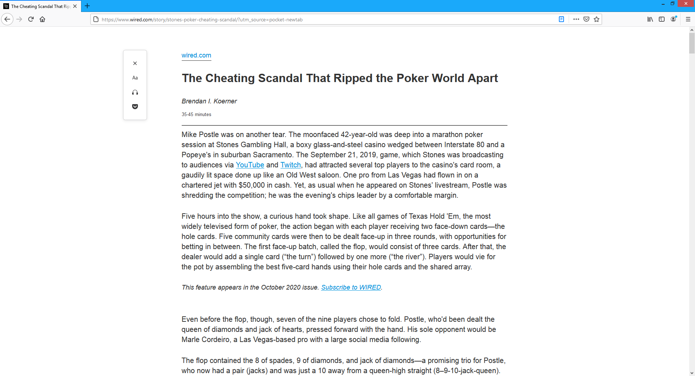{kind=link}
:)
Chrome used to have an experimental flag to enable a reader mode, but it was removed entirely a little while ago. I am, of course, totally unsurprised that Google, which gets most of its revenue from advertising, elected not to officially include in its web browser a way to absolutely slaughter every advertisement. Install an extension, use a competing browser, or suffer the ads, pop-ups, and other “rich content” that pollute the modern web and make it impossible to just keep a stupid web page open while you play a game or something because it’s trying to play five videos at once and hogging all the CPU until you close it.
I visited this article again to see if anything had changed since I first saw it 14 months ago. Here’s what it looks like without reader mode:
{kind=link}
It got worse.
The moderately large ad has been replaced with a new one literally four times the size (double the height and double the width), with a static left pane that advertises a movie and a right pane that autoplays a video of the movie’s trailer. Yes, it did autoplay, with the icon in the address bar to the immediate left of the URL informing me that I had granted that site additional permissions (this is poorly-worded on Firefox’s part, as allowing videos to autoplay while blocking audio is the default setting) and so videos will autoplay here. Yes, it did use 100% of my computer’s CPU with its unoptimized, utterly careless playback widget: I say “careless” and I mean it quite literally. They don’t care about the people who visit this website. They don’t care that this isn’t what people wanted or expected to see. They don’t care that it hogs system resources. They don’t care that, if anything, it makes me less willing to watch this movie, because I now associate it with a mannerless cretin of a web page. However, I have to give it credit where credit is due and admit that at least the video is muted by default even when I tell Firefox to allow both video and audio autoplay. At least it won’t startle you with a blast of high-intensity action audio when all you wanted to do was read about how a man playing a card game might have cheated at the card game and people were cross with him.
Would you look at that, Firefox’s Reader View is still excellent:
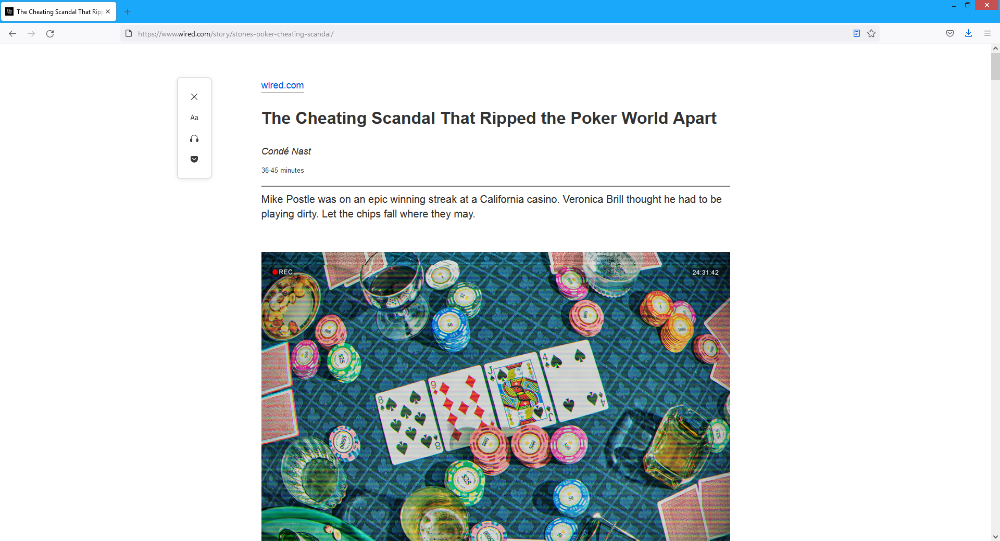{kind=link}
It also includes the poker photo. Perhaps the source page was adjusted in the intervening months, perhaps Firefox’s Reader View updated the way it categorizes relevant content. I would say that including that image in the source was unjustified, but including it in reader mode is the right call – it’s analyzing the page’s structure, not the contents of each image per se. However, other images in the article are still excluded in Firefox’s Reader View. Such a feature has to conduct a balancing act when determining how to transform a page, and it’s not always clear what should go, what should stay, and what the result should look like. Most simple articles work fine, but even I have some sleuthing work ahead of me if I want to figure out why my earlier articles lose bits and pieces in the reader modes for various browsers and platforms – and I do intend to figure that out. Those pages are already clean and simple, but reader modes also provide consistent styling and extra features that justify their use even when not stripping out unwanted junk, so I want those pages to work properly in reader modes without dropping various paragraphs. Fortunately, getting everything to look as it ought to should be a simple matter of using fewer disparate elements. Reader modes have a very difficult time with more complex pages like game wikis, dropping entire charts and sections that are most certainly part of the content. It would be a major undertaking to ensure that such pages work correctly with reader modes, but the administrators of such sites wouldn’t want that anyway because that would cut into ad revenue.
Let’s take a look at another site, this time in Chrome, Firefox, and Firefox with Reader View. Here’s the site in Chrome.
{kind=link}
And here it is in Firefox. Notice how the newsletter pop-up has been repurposed to impugn the user’s character and implore you to turn off the ad blocker (just Firefox’s built-in one, no third-party extensions), which made the content easier to see and focus on. The pop-up to enable notifications for the site is also nowhere to be seen. Still, the CCPA notice and ad blocker pop-up get in the way, especially as their modal nature blocks the rest of the page.
{kind=link}
And then we turn on Firefox’s Reader View.
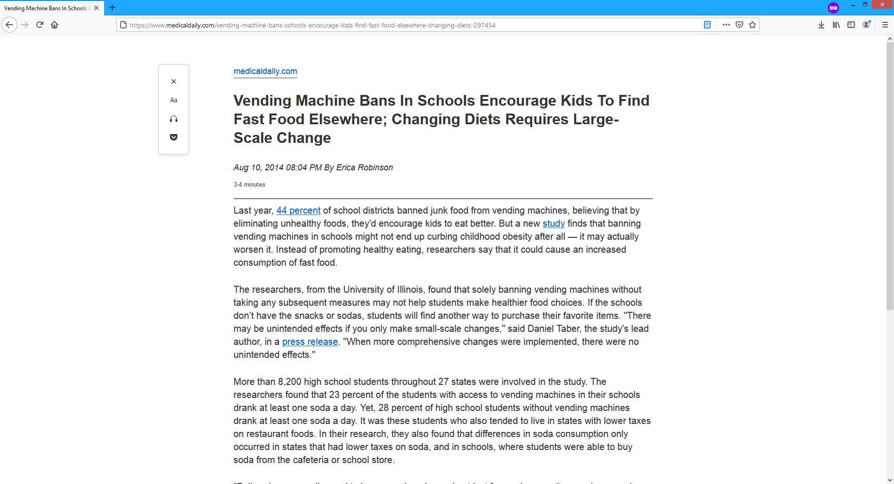{kind=link}
That’s better. If the original page were like this it would drastically reduce load times, but at least we can still reap the benefits of improved usability and resource consumption.
It’s funny because it’s not
I occasionally see advertisements that are less obtrusive than usual and proudly announce that that was the goal of buying the ad space. You’re welcome, Internet denizen! And that’s great. But what’s the point of taking out an ad that looks and feels exactly like any other ad and then boldly announcing that it isn’t an ad?
{kind=link}
How can I have an ad-free day if I’ve been served an ad for the Crispy Chicken Sandwich from McDonald’s? It’s like shouting “QUIET!” in a library.
Never give up on the old ways
Let’s take a look at a couple more sites. Here’s a Snopes page, and it’s a giant mess of ads and nags and notices. I think another ad is struggling to exist at the bottom, as indicated by the telltale logo of Google AdChoices. I’m guessing their ads were so annoying that people started using ad blockers for Snopes, so Snopes went after more revenue by slathering on more ads, and so on. I sometimes wonder if people with websites like this actually visit their own sites and think to themselves, “this is fine.”
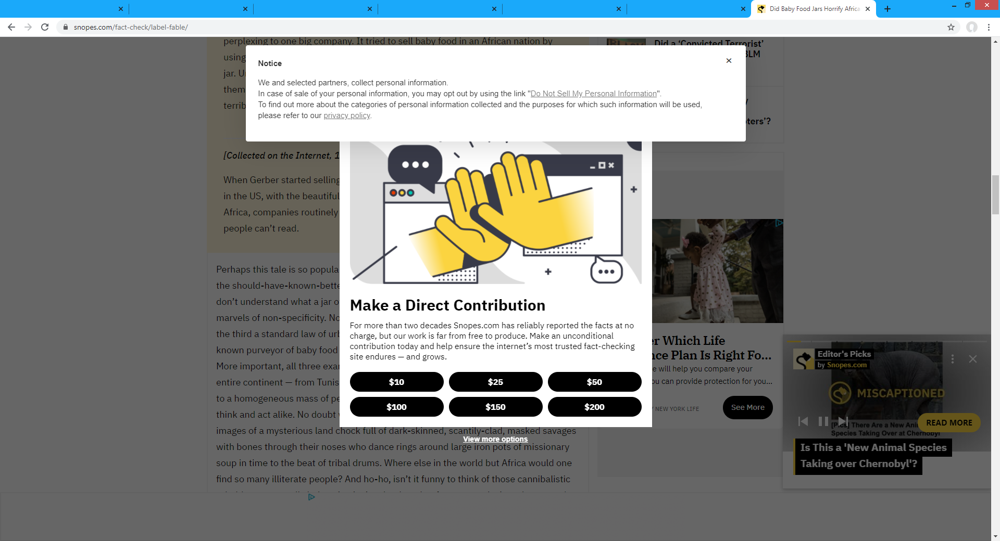{kind=link}
This one is TVTropes. There’s an absolute ton of fantastic user-generated content on that site, but take a gander at what its administrators think is an acceptable ad.
{kind=link}
It’s animated, too. Interested in "MK Walker" algorithms, named after the way that Mortal Kombat’s computer opponents will walk perfectly to exactly match your movements and keep you at the precise distance that they want so they can engage you on their own terms? Well, here’s a full-screen video presentation about pearl necklaces. Maybe the page should buy a pearl necklace so it can experience “one’s greatest freedom” and “express” its content like we wanted it to, rather than being smothered to death by what is apparently the only way humankind has yet devised to monetize services with zero marginal cost delivered at no charge to the consumer.
It is broken here or there, it is broken anywhere
Thanks to the power of mobile computing, you can have a poor web experience on the go!
How lucky you are! How wonderful for you!— Captain Kirk, A Piece of the Action
Just like alien gangsters learning Fizzbin, anyone relying on the default mobile web browsing experience for major commercial sites will be frustrated and confused. Like Captain Kirk telling you that you don’t want another jack but shouting the above quote when it happens, site operators would like you to experience one thing and believe another. The difference is that Kirk was making up Fizzbin as he went along, while websites often have actual content that we might like to read if possible. The significantly smaller screen size and touch-based interface make for a much different browsing experience, ads included. The current norm is to have no more than one junk element covering the content and tethered to a fixed location like the bottom of the screen, with other nuisances interspersed throughout the content like ersatz paragraphs that you’ll see as you scroll through the page.
Here’s a fine example. We have the standard disclaimer, with a video ad visible beneath the disclaimer’s semi-transparent background. This seems like it should feel better than the opaque empty space in the subscription plea that Wired uses, since it obscures content to a lesser degree, but it’s still annoying enough that most people will either deal with the disclaimer or focus on the top half of the screen that isn’t blocked at all.
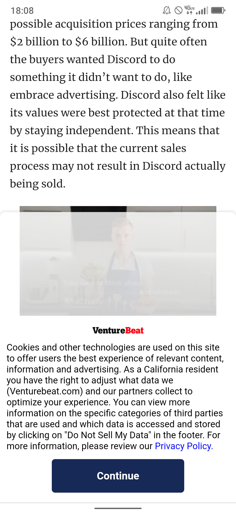{kind=link}
Next, here’s a comparison of a Bloomberg article on mobile in Firefox’s standard view on the left and Reader View on the right. I don’t mind telling you that getting that to display properly in both the standard view and the Reader View was an epic journey. At one point I literally shouted “WHAT” at my monitor. I ended up resolving that but discovering other quirks affecting some other pages on my site, one of which (this bug where all h1 elements get removed was fixed last year but it still removes the first one that matches the page title) I think I’ll just accept for now.
This dive into insanity is known as “security through obscurity”: if they don’t explain how to make a site work well with Reader View, then shady developers can’t use that information to make their site work poorly with Reader View and thus railroad users into using the standard view. No surprise that the adversity which prompted the feature’s creation also holds it back.
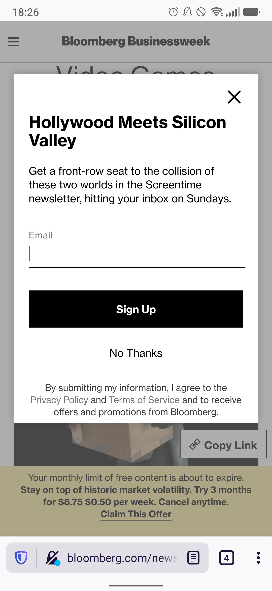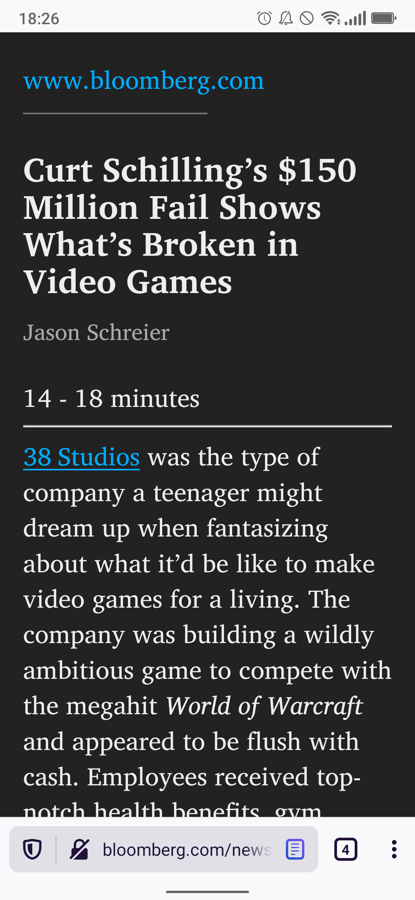{kind=link}
{kind=link}
Anyway, here’s a Guardian article with a similar comparison.
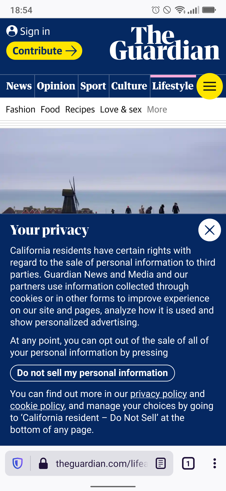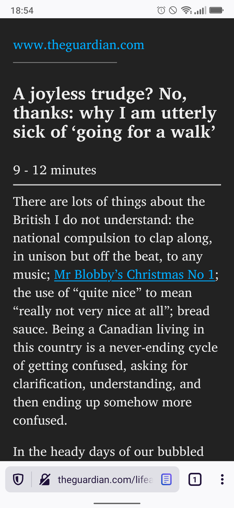{kind=link}
{kind=link}
There are people who have never seen this sort of disgrace before. Tap a link to an article, tell them you’re about to show them how we consume modern news, and show them the default view. Where is the news? We’ve got a warning telling them that something is running out, an invitation to share their contact information, an attempt to sell them something, a description of what categories of news are available, half a photo of the outdoors, and a legal notice for users in certain regions like California or the European Union. The closest any of that gets to relevance is the photo, which is mostly there to spice up the page rather than actually convey information. To get something that actually looks like the news we promised, we need the reader mode. Otherwise, we’d need to fight our way past an assortment of digital assailants that beset us like a carnival ride’s spring-loaded monsters.
Chrome may not have a reader mode, but it does have a different interesting feature: detecting and removing page elements with unusually high resource consumption. Perhaps this was deemed acceptable because it only dings certain ads that have demonstrated their poor behavior a posteriori rather than clear-cutting entire web pages at once. Whatever the reason, here’s what it looks like on mobile:
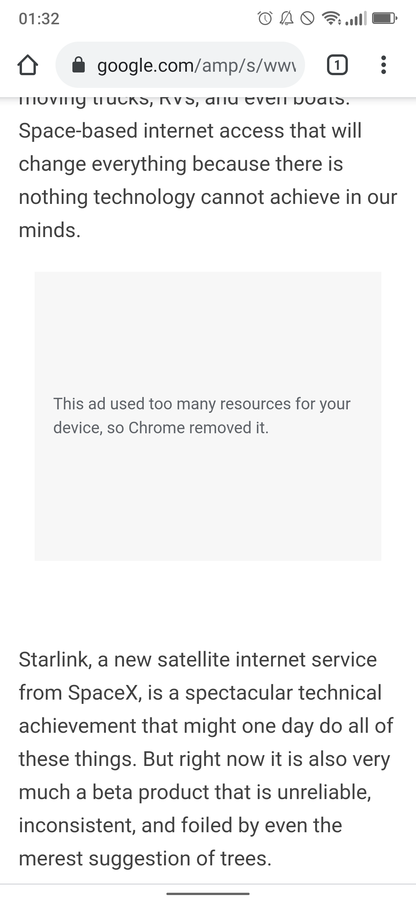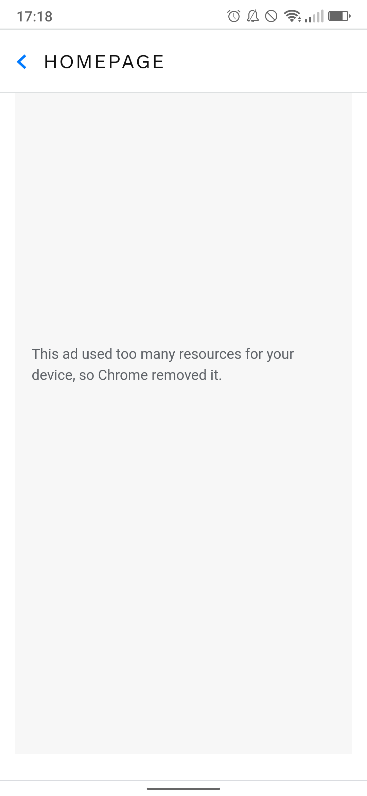{kind=link}
{kind=link}
As you can see, it works not just in the Chrome browser proper but also in any app that leverages it internally to render documentation pages or what have you. Perhaps the next evolution of this technology will allow Chrome to correctly determine what is and isn’t an ad, so that we can see the homepage for whatever section of whatever app we were trying to use. Maybe it has a legitimate reason for demanding all those resources. I mean, probably not, but it might. Potentially, anyway.
Conclusion
I suppose I need a conclusion. How about a brief summary: there are too many “rich web” ways to utterly screw up a web page these days, and the biggest industry leaders have become the biggest culprits rather than setting a good example for the rest, to the point that browsers now have built-in tools to improve those pages by forcing them back to the poor web of the 90s.
{kind=link}